原文连接:https://www.cnblogs.com/wupeixuan/p/12019263.html
本文主要挑选出读者有必要首先学习的 11 个 Linux 命令，如果不熟悉的读者可以在虚拟机或云服务器上实操下，对于开发人员来说，能熟练掌握 Linux 做一些基本的操作是必要的！
事不宜迟，这里有 11 个 Linux 命令行技巧，可以使你的生活工作更轻松。
1. grep
$ grep "some string" filegrep 命令在每个文件中搜索，它还会寻找由换行符分隔的模式，并且 grep 会打印与模式匹配的每一行。
使用 grep 命令查找文件中的所有 React 关键字：
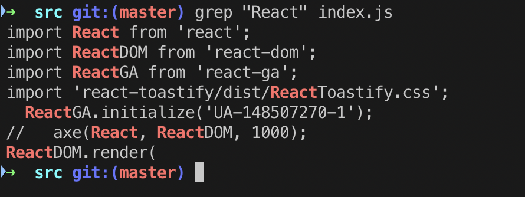
该 -i 选项使我们能够在给定文件中不区分大小写地搜索字符串。它匹配 "REACT"、"REact" 和 "react" 之类的词。
$ grep -i "REact" file我们可以使用 -c （count）标志找到与给定字符串/模式匹配的行数。
$ grep -c "react" index.js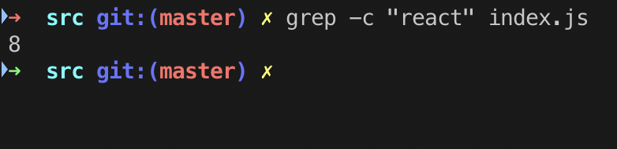
这是在网上找到的关于 grep 命令有趣且有教育意义的漫画。

2. ls
$ lsls 列出当前活动路径中的文件和目录。如果路径名是文件，ls 则根据请求的选项在文件上显示信息。如果路径名是目录，则 ls 显示有关文件和其中的子目录的信息。
使用 ls 命令显示当前目录中的所有文件:
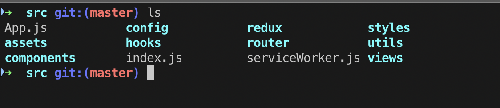
你可能已经注意到文件显示为灰色，而文件夹为蓝色。这是为了帮助我们区分文件夹和文件。
3. pwd
$ pwd打印出当前工作目录（pwd）:
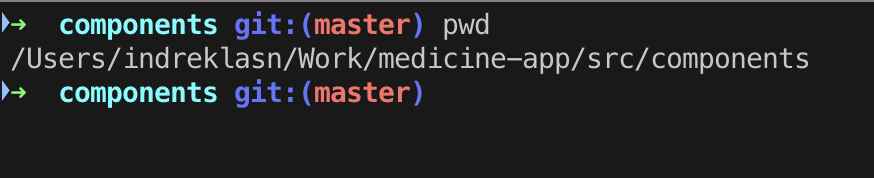
pwd 命令是用于打印当前工作目录的命令行实用程序。输出会将当前工作目录的完整系统路径打印到标准输出。默认情况下，pwd 命令会忽略符号链接，尽管可以使用选项显示当前目录的完整物理路径。
4. cat
$ cat somefile.js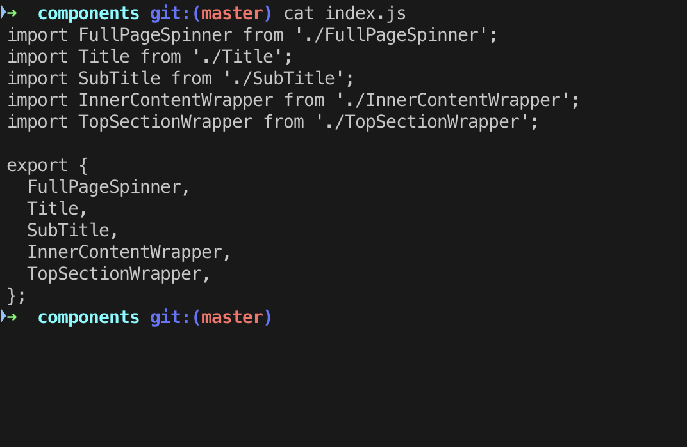
该cat命令具有与文本文件有关的三个相关功能：
- 显示它们
- 合并副本
- 创造一个新的
cat 的最常见用法是读取文件的内容，并且 cat 通常也是最方便读取文件的命令。
在以下示例中，使用输出重定向运算符（由向右指向的尖括号表示）将 cat 的标准输出重定向到 file2：
$ cat somefile > somefile2用 cat 创建文件:
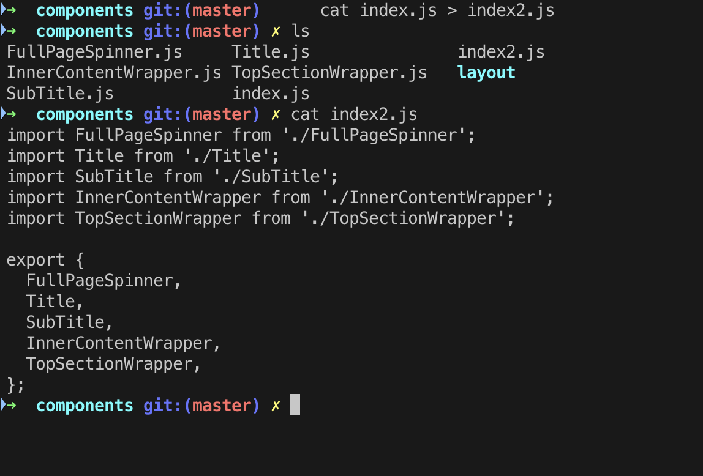
5. echo
$ echo "some text"Linux 中的命令用于显示作为参数传递的一行文本/字符串。这是一个内置命令，主要用于 Shell 脚本和批处理文件中，以将状态文本输出到屏幕或文件。
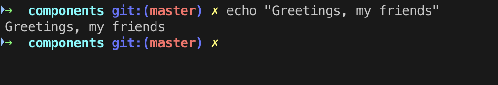
6. touch
$ touch somefiletouch 命令用于创建没有任何内容的文件。当用户在创建文件时没有要存储的数据时，可以使用 touch 命令。
touch 创建新文件:
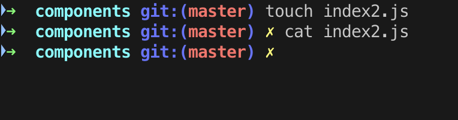
我们是如何使用 touch 来创建文件和 cat 查看文件内部的。由于新创建的 index2.js 文件是空，因此 cat 不返回任何内容。
以下是 cat 和 touch 之间的主要区别：
- cat：用于创建包含内容的文件。
- touch：创建一个没有任何内容或空文件的文件。请记住，使用 touch 命令创建的文件为空。当用户在文件创建时没有要存储的数据时，此命令很有用。
7. mkdir
$ mkdir some-directory如您所料，mkdir 在当前活动路径中创建一个新的空目录。使用此命令创建新文件夹，而不是在文本编辑器或 GUI 中四处单击。
使用 mkdir 创建一个新目录:
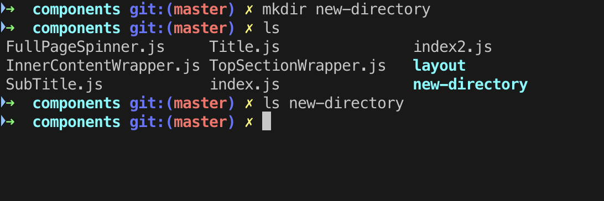
7.1 rm
$ rm someFilerm 代表 remove，它会执行删除文件操作。
使用 rm 命令删除文件:
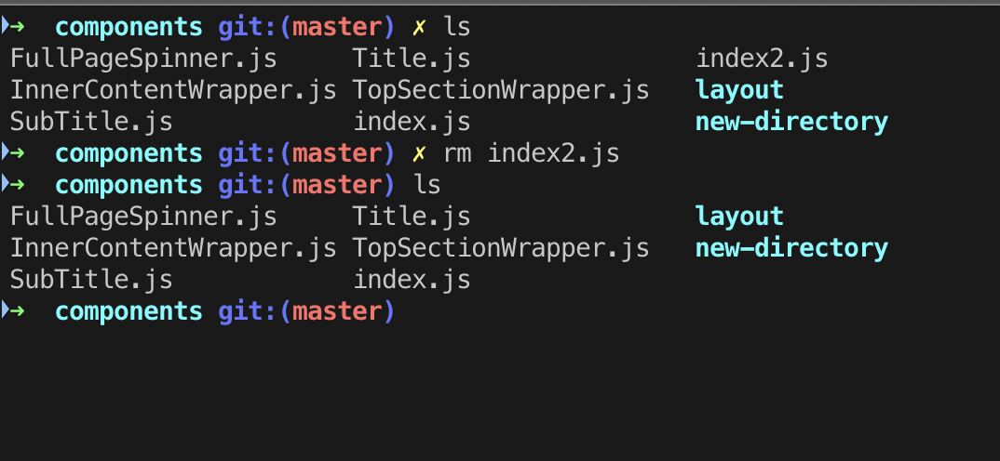
默认情况下，rm 命令不会删除目录。你需要传递 -rf 标志以删除目录。
$ rm -rf some-directory使用 rm 命令删除目录:
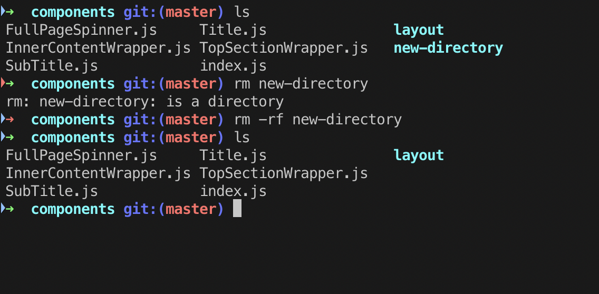
7.2 rmdir
$ rmdir some-directoryrmdir 如果目录内没有内容，该命令将删除目录。
使用 rmdir 删除空目录:
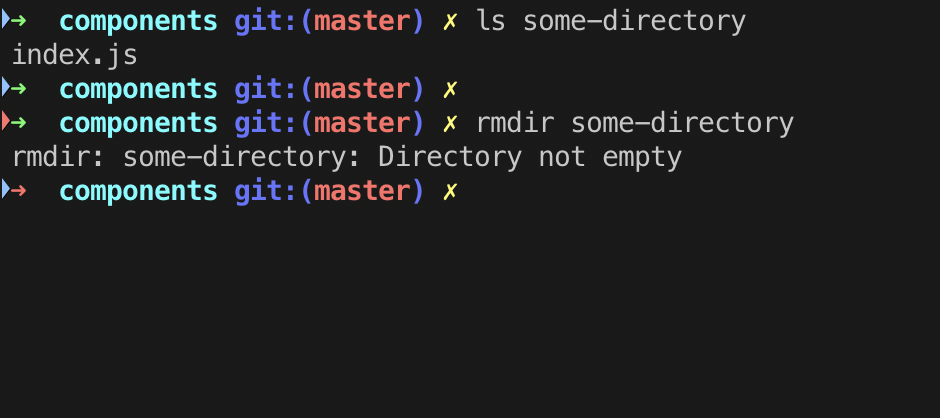
8. tail
$ tail somefiletail 命令读取文件并输出文件的最后部分。
输出最后的 num 行:
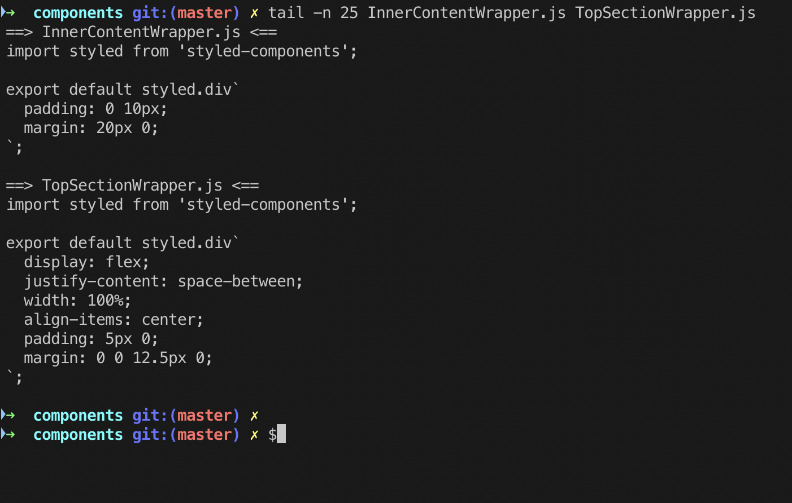
tail 在查看崩溃报告或以前的历史记录日志时，该命令很有用，以下是使用 tail 命令查询文件日志的示例。
[root@wupx ~]# tail -20f /sell/logs/sell.log
2019-12-09 20:35:40,024 - INFO #[operation,,,]# [http-nio-8111-exec-2] c.g.s.c.i.ProjectIndexApi [ProjectIndexApi.java:537]: 查询参数：BaseQueryDTO{startDate=Tue Jan 01 08:00:00 CST 2019, endDate=Mon Dec 09 14:45:31 CST 2019, regionList=[], productCodeList=[apple]}
2019-12-09 20:35:40,024 - INFO #[sell,,,]# [http-nio-8111-exec-2] c.g.s.c.i.ProjectIndexApi [ProjectIndexApi.java:538]: 查询接口：/products/projects/engineerType/count/range
2019-12-09 20:35:40,085 - INFO #[sell,,,]# [http-nio-8111-exec-9] c.g.s.c.i.ProjectIndexApi [ProjectIndexApi.java:483]: 查询参数：BaseQueryDTO{startDate=Tue Jan 01 08:00:00 CST 2019, endDate=Mon Dec 09 14:45:31 CST 2019, regionList=[], productCodeList=[apple]}
2019-12-09 20:35:40,085 - INFO #[sell,,,]# [http-nio-8111-exec-9] c.g.s.c.i.ProjectIndexApi [ProjectIndexApi.java:484]: 查询接口：/products/projects/active/count
2019-12-09 20:35:40,145 - INFO #[sell,,,]# [http-nio-8111-exec-7] c.g.s.c.i.ProjectIndexApi [ProjectIndexApi.java:483]: 查询参数：BaseQueryDTO{startDate=Tue Jan 01 08:00:00 CST 2019, endDate=Mon Dec 09 14:45:31 CST 2019, regionList=[], productCodeList=[apple]}
2019-12-09 20:35:40,145 - INFO #[sell,,,]# [http-nio-8111-exec-7] c.g.s.c.i.ProjectIndexApi [ProjectIndexApi.java:484]: 查询接口：/products/projects/active/count
2019-12-09 20:35:40,246 - INFO #[sell,,,]# [http-nio-8111-exec-8] c.g.s.c.i.ProjectIndexApi [ProjectIndexApi.java:483]: 查询参数：BaseQueryDTO{startDate=Tue Jan 01 08:00:00 CST 2019, endDate=Mon Dec 09 14:45:31 CST 2019, regionList=[], productCodeList=[apple]}
2019-12-09 20:35:40,246 - INFO #[sell,,,]# [http-nio-8111-exec-8] c.g.s.c.i.ProjectIndexApi [ProjectIndexApi.java:484]: 查询接口：/products/projects/active/count
2019-12-09 20:35:40,313 - INFO #[sell,,,]# [http-nio-8111-exec-5] c.g.s.c.i.ProjectIndexApi [ProjectIndexApi.java:483]: 查询参数：BaseQueryDTO{startDate=Tue Jan 01 08:00:00 CST 2019, endDate=Mon Dec 09 14:45:31 CST 2019, regionList=[], productCodeList=[apple]}
2019-12-09 20:35:40,313 - INFO #[sell,,,]# [http-nio-8111-exec-5] c.g.s.c.i.ProjectIndexApi [ProjectIndexApi.java:484]: 查询接口：/products/projects/active/count
2019-12-09 20:35:40,401 - INFO #[sell,,,]# [http-nio-8111-exec-4] c.g.s.c.i.ProjectIndexApi [ProjectIndexApi.java:306]: 查询参数：BaseQueryDTO{startDate=Tue Jan 01 08:00:00 CST 2019, endDate=Mon Dec 09 14:45:31 CST 2019, regionList=[], productCodeList=[apple]}
2019-12-09 20:35:40,401 - INFO #[sell,,,]# [http-nio-8111-exec-4] c.g.s.c.i.ProjectIndexApi [ProjectIndexApi.java:307]: 查询接口：/products/projects/new/statics
2019-12-09 20:35:40,490 - INFO #[sell,,,]# [http-nio-8111-exec-1] c.g.s.c.i.ProjectIndexApi [ProjectIndexApi.java:279]: 查询参数：BaseQueryDTO{startDate=Tue Jan 01 08:00:00 CST 2019, endDate=Mon Dec 09 14:45:31 CST 2019, regionList=[], productCodeList=[apple]}
2019-12-09 20:35:40,490 - INFO #[sell,,,]# [http-nio-8111-exec-1] c.g.s.c.i.ProjectIndexApi [ProjectIndexApi.java:280]: 查询接口：/products/projects/liveness/statics9. wget
$ wget someurlGNU Wget 是一个免费软件包，用于使用 HTTP，HTTPS，FTP 和 FTPS（最广泛使用的Internet协议）检索文件。这是一个非交互式命令行工具，因此可以很容易地从脚本、CRON 作业，不支持 X-Windows 的终端等中调用它。
wget 获取有关网页的信息:

GNU Wget 具有许多使检索大型文件或镜像整个 Web 或 FTP 站点变得容易的功能，包括：
- 可以使用 REST 和 RANGE 恢复中止的下载
- 可以使用文件名通配符并递归镜像目录
- 基于 NLS 的消息文件，适用于多种语言
- 将下载的文档中的绝对链接转换为相对链接，以便下载的文档可以在本地彼此链接
- 在大多数类似 UNIX 的操作系统以及 Microsoft Windows 上运行
- 支持 HTTP 代理
- 支持 HTTP cookie
- 支持持久的 HTTP 连接
- 无人值守/后台操作
- 使用本地文件时间戳确定镜像时是否需要重新下载文档
- GNU Wget 是根据 GNU 通用公共许可证发行的。
10. find
$ find path -name filenamefind 命令使你可以快速查找文件或目录。当你正在处理具有数百个文件和多个目录的大型项目时，此功能很有用。
查找所有名为 index.js 的文件:

搜索特定类型的文件
find 命令还允许您在目录（及其子目录）中搜索相同类型的文件。例如，以下命令将搜索 .js 当前工作目录中的所有文件。
$ find . -name "*.js"在 components 目录中查找所有.js文件:
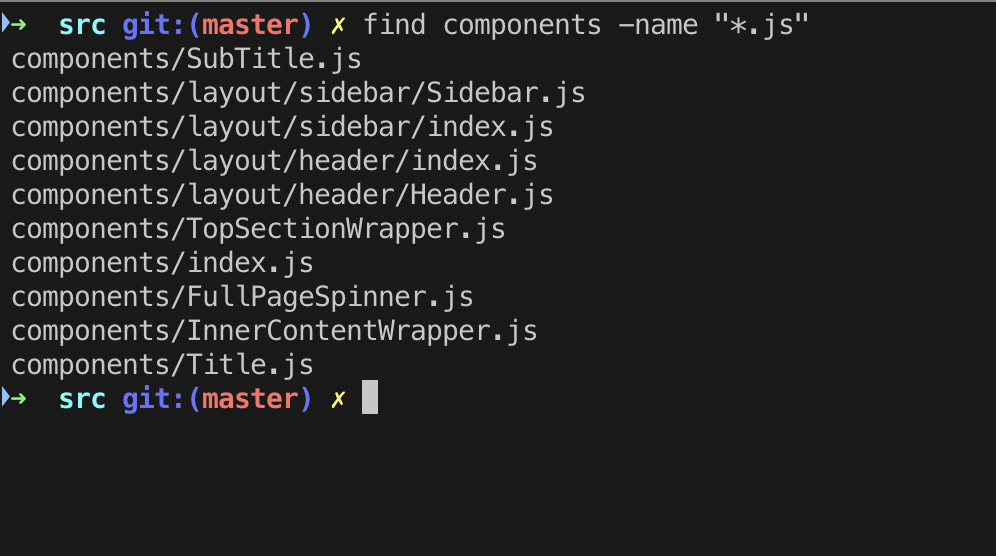
11. mv
$ mv somefile /to/some/other/pathmv 命令将文件或目录从一个位置移动到另一个位置。mv 命令支持移动单个文件，多个文件和目录。
将 some 目录从组件移动到 utils 目录:
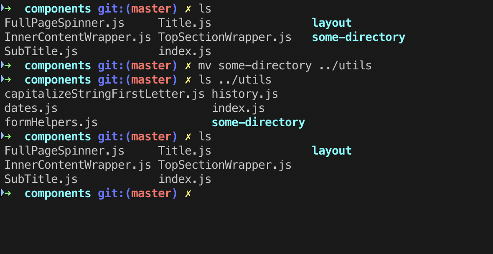
总结
这篇文章主要是介绍常用的 11 个 Linux 命令，感谢你的阅读，希望你能从中学到了一些知识。